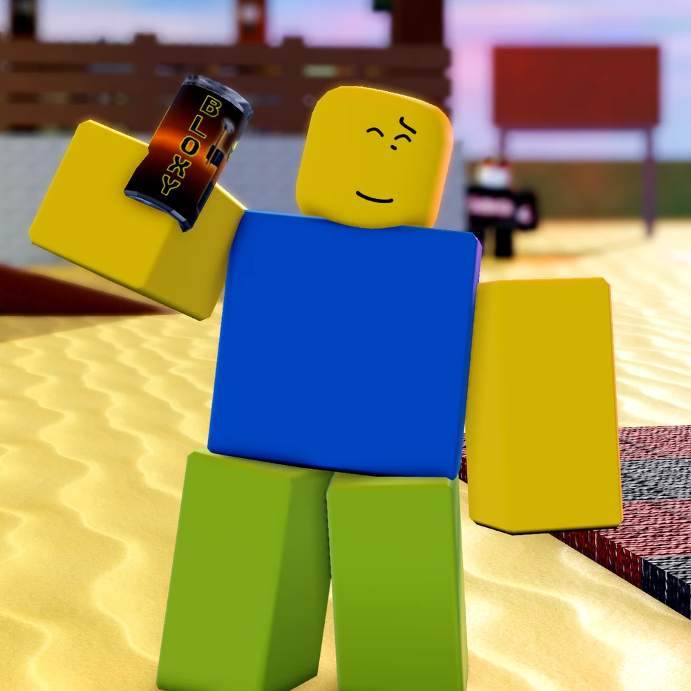
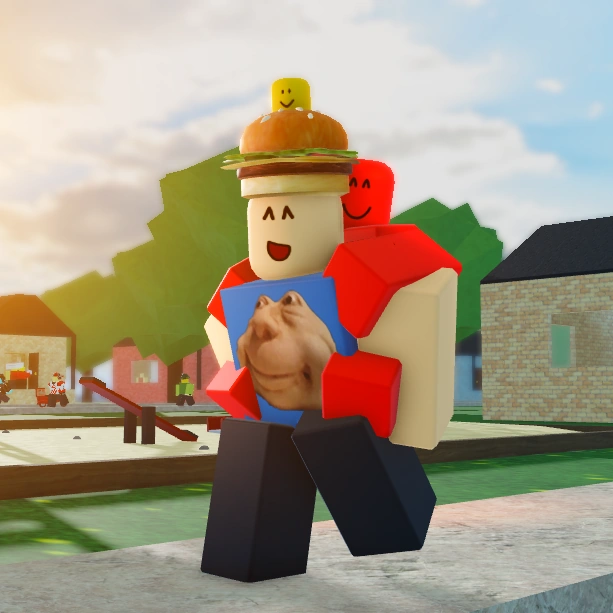
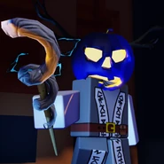
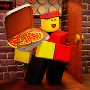
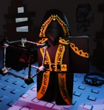
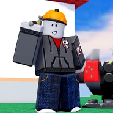

The Survivors
From the name itself, Survivors will, obviously, try to survive as long as possible. Basically, they can do 5 generators spread all over each map to remove a few seconds off of the time limit set per round. As mentioned in the home page, there are currently 10 survivors available in the game, their names, listed below. They are also split into three classes: Survivalists, Supports, and Sentinels/Stunners. (click the links below their pictures to find their individual page, description,and so much more!)
Survivalists
Survivalists such as Noob and 007n7 focus on surviving the round and completing generators, while also staying alert for the killer.
Playstyle:
* do generators to reduce time
* survive and try to help teamates
* juke/evade the killer
The Survivalists:

Supports
Supports such as Elliot, Taph, Builderman and Dusekkar focus on helping other teamates and completing generators, while also staying alert for the killer.
Playstyle:
*stay close to help your teamates
*avoid direct confrontations with the killer
* juke/evade the killer
The Supports:



Sentinels/Stunners
Sentinels(or Stunners) such as Guest 1337, Chance, Two Time and Shedletsky focus on stunning the killer with their abilities and protecting other teamates, while also trying to remain alive and do generators (that is, if they are busy running away from the killer, or just went away from keyboard or afk).
Playstyle:
* stun the killer
* survive and try to help teamates
* juke/evade the killer
The Sentinels(or Stunners):